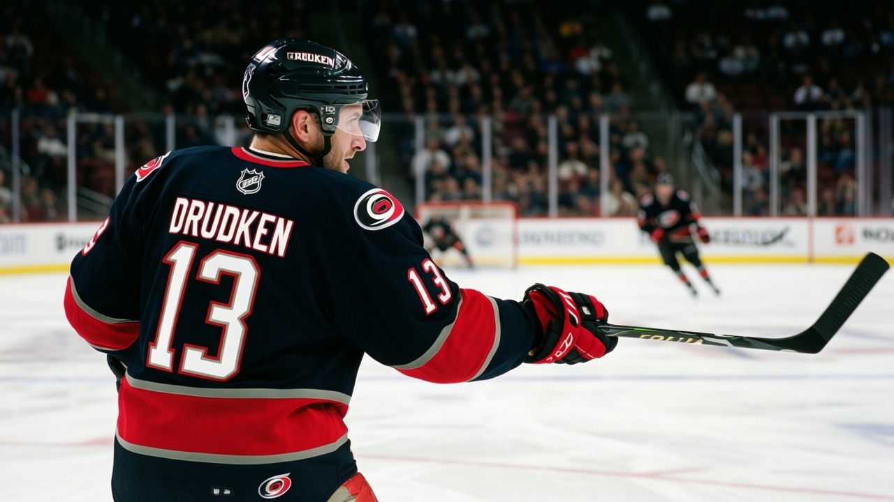
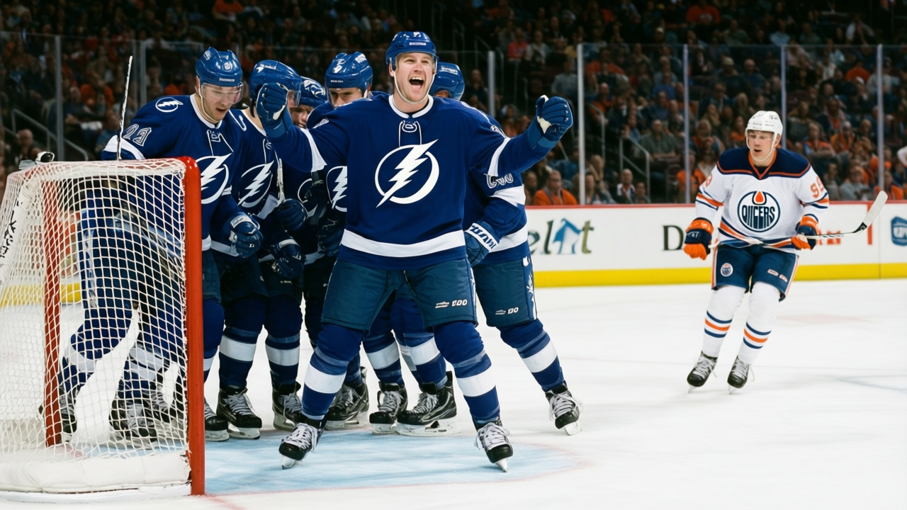
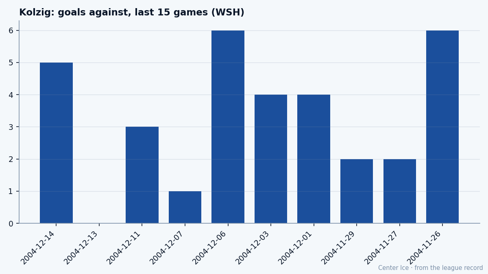
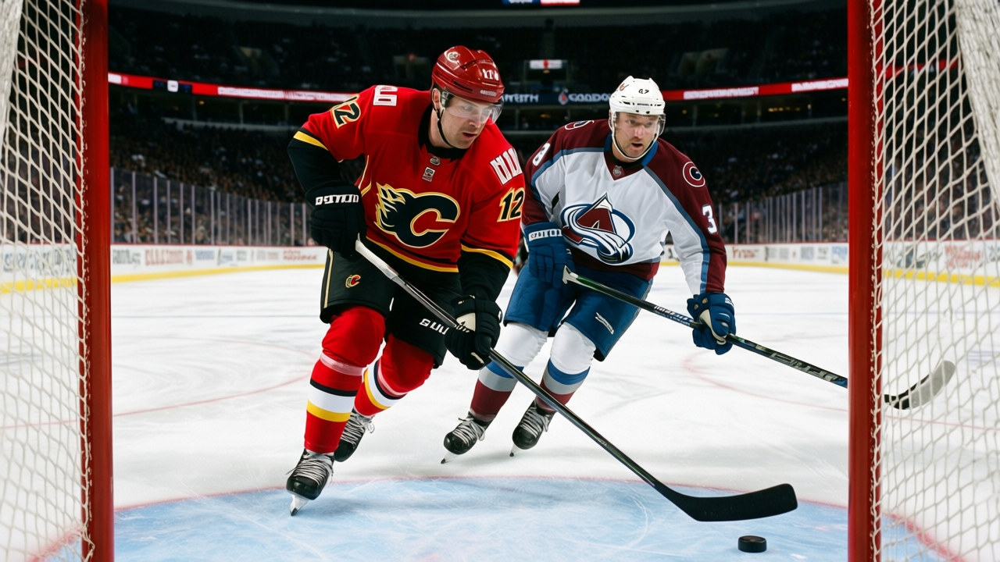
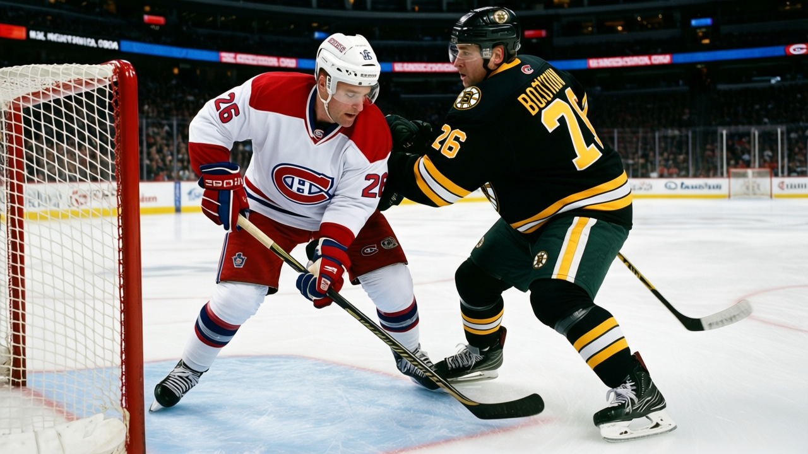

The SweaterTomáš Vrána
First Overall, Twenty-One Years Later: Lemieux's 66 Points and Pittsburgh's 33
He is scoring at a 169-point pace at 39 on a team that has won 10 games, and the Index still says he is below his base.
Feature4 min read
 The SweaterProfiles of the men inside the jerseys
The SweaterProfiles of the men inside the jerseys
 ·4 min read
·4 min read92 in the Book, 64 points in 36 games, and a Thrashers room that has won 9. The gap between the man and the team is the whole of this Atlanta winter.
 ·4 min read
·4 min readThe Czech winger carries the two highest physical grades in the Book, 54 points in 35 games, and a contract that expires in July.

 ·4 min read
·4 min readThe Masterton went to the player whose Book reads 89 deke, 50 faceoff, 50 fight. Three seasons later, he wears the C in Philadelphia and is scoring for a team that cannot win.

 ·5 min read
·5 min readWaived twice in five weeks, buried in the minors at 24, the man with the 94 wrist is now putting up a point a night for the best team in the Southeast.

 ·5 min read
·5 min readThe goals are up. The assists are gone. The speed is still 98, and that is the whole man.

 ·4 min read
·4 min read74 goals, 163 points, the Hart at 27. One year later, he's at 53 points in 32 games, the Index is minus one, and his contract runs out in July.

 ·4 min read
·4 min readArt Williams said it in 1998. He's 24 now, Tampa Bay is second in the Southeast, and the grade reads 84 with the room at 98.

 ·4 min read
·4 min readThe Vezina is on his shelf, the record reads 14-14, and the last 10 games tell a story the box score buries.

 ·4 min read
·4 min readThe Richard Trophy is on his shelf, the goals are coming at 0.96 a game, and his team has lost six straight. The last year of $6.50M is being spent in last place.

 ·3 min read
·3 min readMontreal gives up 125 goals in 29 games. Its 22-year-old from West Islip, drafted seventh in 2001, is up six on the Index with 35 points, and it is the only warmth in the room.
 ·5 min read
·5 min readNashville traded two picks to make him the second name called in 1998. Six seasons in, the passer has started shooting, and the franchise has its center.
 ·3 min read
·3 min readThe Northwest Territories sent him to the league in 1990, and he has been putting goals up in cold buildings ever since.